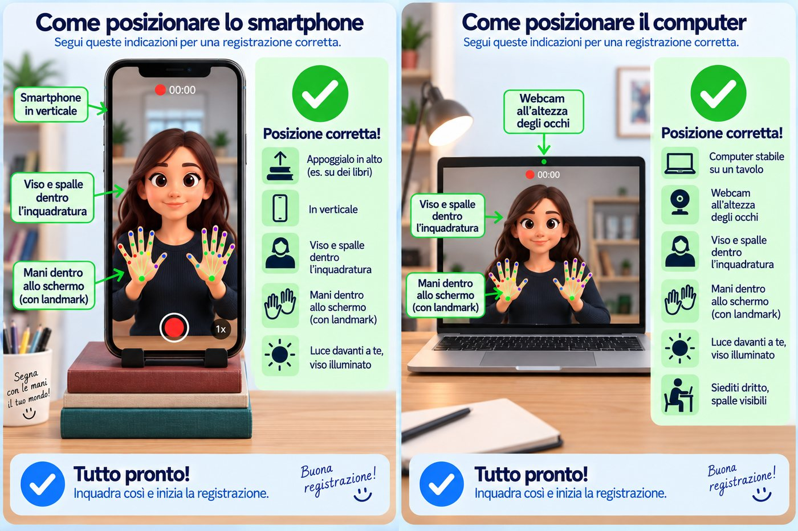

Grazie per l'aiuto!
Un computer sta imparando la LIS.
Finora ha visto una persona sola.
Con i tuoi segni lo aiuti a imparare la LIS.
Il video resta sul tuo dispositivo.
La pagina rileva solo la posizione di mani, viso e spalle.
Nessuna immagine viene inviata.
Puoi fermarti quando vuoi.
Solo lettere e numeri. Senza spazi.
Prima di cominciare
Se qualcosa non va,
la pagina te lo dice.

Tocca o clicca
l'immagine per ingrandirla.
Durante la registrazione
Tieni entrambe le mani libere.
Non tenere il telefono in mano.
Segna come fai normalmente.
Usa il tuo labiale naturale.
Non rallentare.
Non esagerare i movimenti.